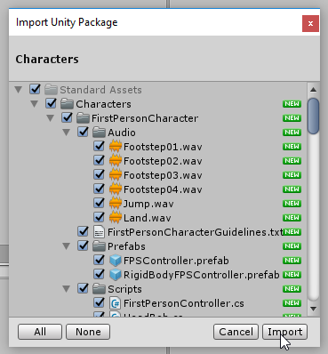

NPC Chat Tutorial
Or go back to home
What's in this tutorial?
- Click on something to interact with it
- Make text appear on the screen for a few seconds
- keep track of how much money the player has, and other information
- In a different tutorial we will make a proper inventory system. You can combine that tutorial with these NPCs to make them give or take items from your inventory.
This tutorial exists in slide-form as well, so if you are presenting to a class, click here
Pre-setup
If you already have a first person game, you can use that and skip the first step. Skip ahead to the next section.
If you don't already have a first person game, let's make one.
Start a new Unity project
Add a Plane, using the Hierarchy view
Select the plane and reset its transform, to make sure it's in the center of the world. Click on the cog icon in the top right, then choose 'Reset'
Import the standard characters by clicking Assets, Import Package, Characters.
Click 'Import' on the pop-up to import everything
Find the First Person Controller in your Project view
Drag them into your Scene view.
Delete the Main Camera, because the First Person Controller comes with its own camera.
Press play and check that it's working. You should be able to look around with the mouse, move with WASD and jump with spacebar.
Press the stop button when you are done. You might need to press ESC to release the mouse because the First Person Controller takes control of it.
Now we are ready to begin.
Set up the Game Objects
We will have 2 NPCs: Cubey the Car Dealer and Sphero the Shopkeeper
Add a Cube to your scene.
Add a Sphere to your scene.
Rename them so we can tell what they are. (Click on their name in the Hierarchy view, right click and choose 'rename'.)
Move the objects in the scene so they start in front of the player. This will let us test them quickly.

First-person click script
When the player clicks:
We draw a 3D line out from the middle of the camera and check what it hits.
We want to know if it hits an NPC.
We'll write the script step by step.
Select the player in the Hierarchy
At the bottom of the Inspector, choose Add Component
Choose 'New Script' and name it 'ClickToTalk'
Edit the script by double-clicking its name here
Player Click Script v1
We are rewriting the Update function. Leave the rest of the script alone, but change the Update function to look like this:
void Update () {
if (Input.GetMouseButtonDown(0)) {
print ("Click detected!");
}
}
Reference: Unity Docs
This will display a message when the player clicks. Save your changes, run the game and check that it works.
Player Click Script v2
Now we are adding a little more to the Update Method. When the player clicks, we will trace a line out and see what it hits.
void Update () {
if (Input.GetMouseButtonDown(0)) {
RaycastHit hitInfo = new RaycastHit ();
Transform camTransform = Camera.main.transform;
bool isHit = Physics.Raycast (camTransform.position, camTransform.forward, out hitInfo);
print(hitInfo.collider);
}
}
Reference: Unity Docs
Check that it works. You should be able to click on the NPCs or the ground and their name will appear in the log.
Player Click Script v3
We'll make it so you can only click on certain objects.
And when you click on them, we'll send them a message so they can run their own code.
void Update () {
if (Input.GetMouseButtonDown(0)) {
RaycastHit hitInfo = new RaycastHit ();
Transform camTransform = Camera.main.transform;
bool isHit = Physics.Raycast (camTransform.position, camTransform.forward, out hitInfo);
if (isHit && hitInfo.collider.gameObject.tag.Equals ("Clickable")) {
print ("Clickable!");
hitInfo.collider.gameObject.SendMessage("Click");
} else {
print ("Not clickable");
}
}
}
Reference: Unity Docs
Clickable objects v1
1. Must be tagged 'Clickable'. This is how our clicking script knows that they are clickable.
2. Must have a script with a function called Click. This function will run when they are clicked, because we call it using SendMessage.
void Click() {
print("You clicked me"); //just a test
}
Clickable objects v2
using UnityEngine.UI;
public class CarDealer : MonoBehaviour {
public Text chatText;
void Start () {
chatText.text = "";
}
void Click () {
chatText.text = "I am a car dealer!";
}
}
Add a Text to the scene. Drag it into the chatText slot of this script.
Clickable objects v3
We use a coroutine to make the text appear then disappear. Coroutines are functions that can stop and wait, then come back later.
using UnityEngine.UI;
public class CarDealer : MonoBehaviour {
public Text chatText;
void Start () {
chatText.text = "";
}
void Click () {
StartCoroutine (WelcomeConvo ());
}
IEnumerator WelcomeConvo () {
chatText.text = "I am a car dealer!";
yield return new WaitForSeconds (2);
chatText.text = "";
}
}
Sharing information
We want every script to have access to some shared information:
1. How much money the player has
2. Does the player character like apples or bananas the most?
QuestInfo script
Create an empty game object in the scene. Name it 'QuestObject'. Add a script named QuestInfo. Give the script these public variables (and no functions)
public class QuestInfo : MonoBehaviour {
public int Money;
public bool PlayerLikesApples;
}QuestInfo script
You can change the values in the Unity editor, to help test things quicky:

Connecting scripts
Let the Car Dealer know about QuestInfo. Add this to the Car Dealer code:
...
public QuestInfo questInfo;
}Drag the QuestObject in to the slot, so it knows where to find the information:
Using those variables
We can now use those variables in our car dealer class:
IEnumerator WelcomeConvo () {
if (questInfo.Money > 10) {
chatText.text = "Want to buy a car?";
yield return new WaitForSeconds (2);
chatText.text = "";
} else {
chatText.text = "Come back when you have $10.";
yield return new WaitForSeconds (2);
chatText.text = "";
}
}
Connecting scripts v2
I get tired of dragging QuestInfo object into every script that needs QuestInfo. Let's make them link up automatically!
//Replace the word 'public' with 'private'
private QuestInfo questInfo;
void Start () {
//automatically link up at the start of the game:
questInfo = FindObjectOfType(typeof(QuestInfo));
}